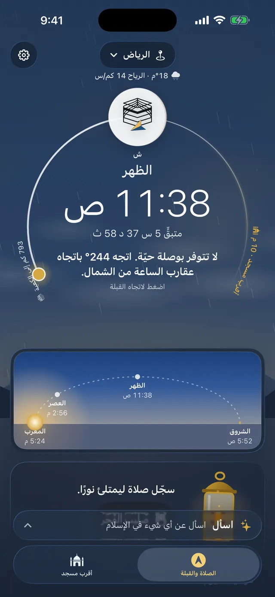
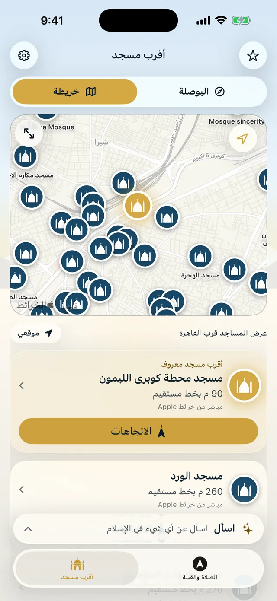
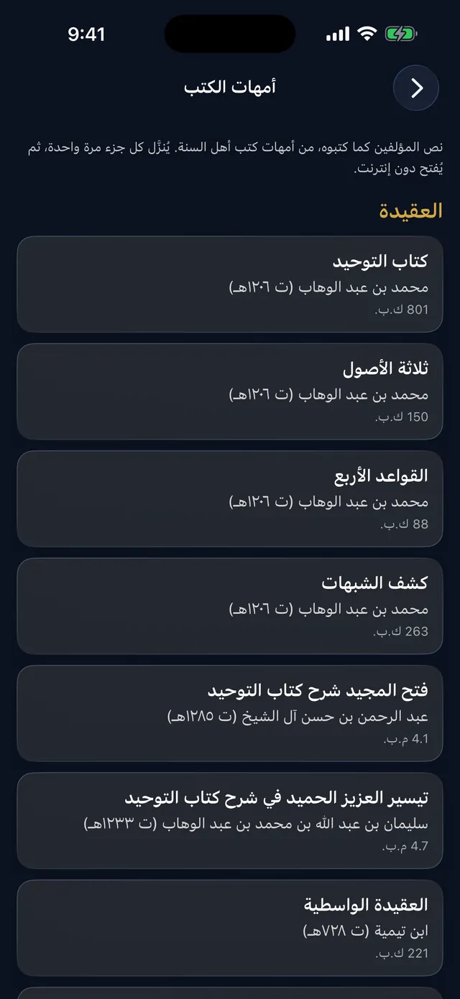
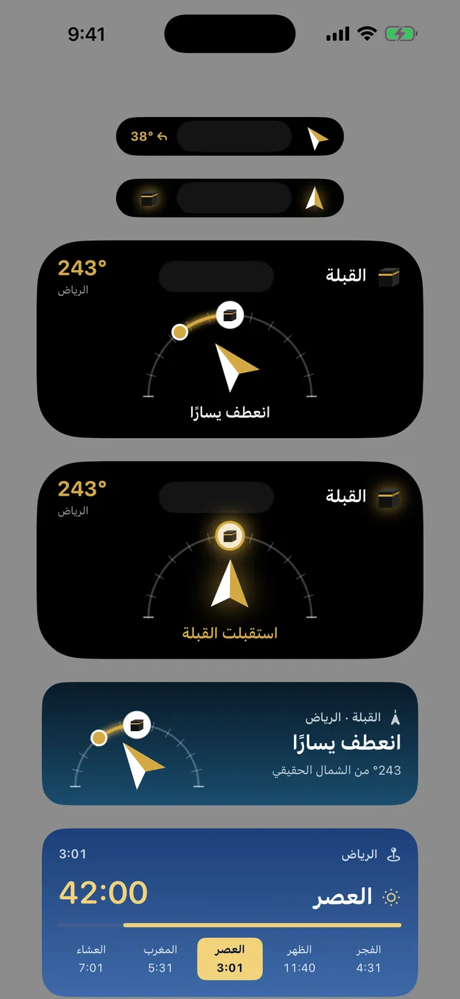
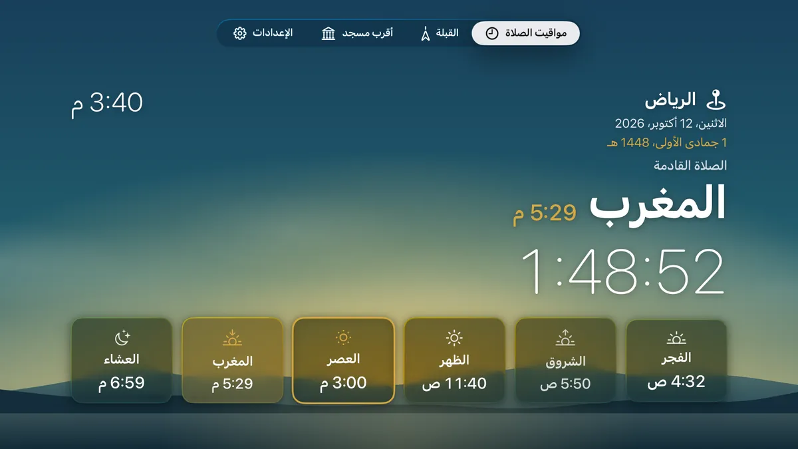
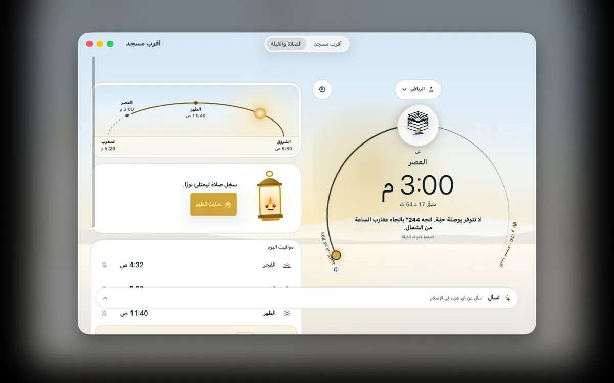
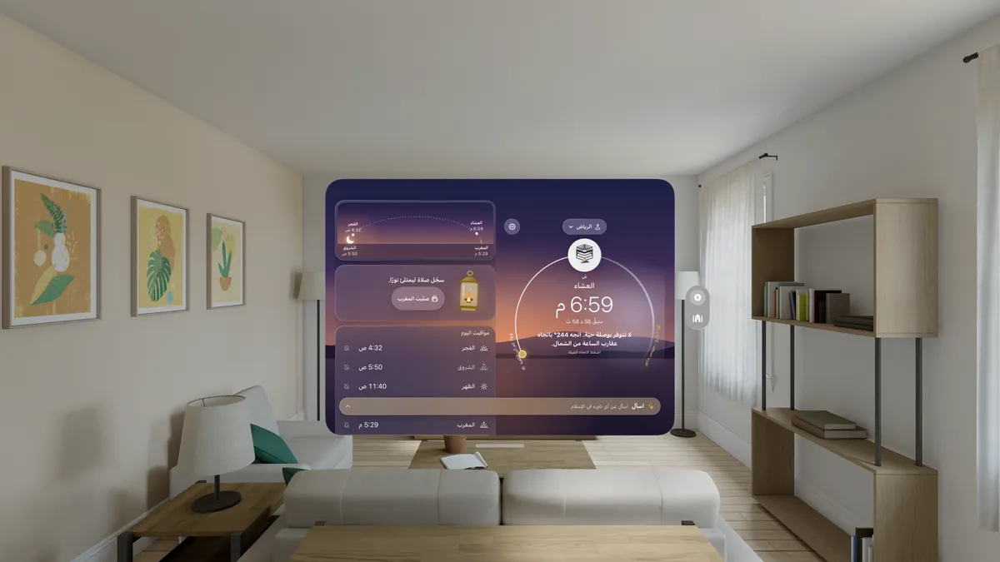
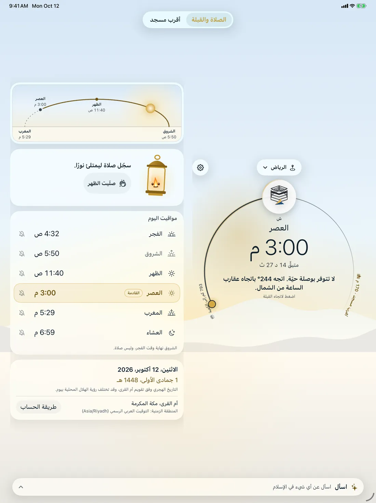
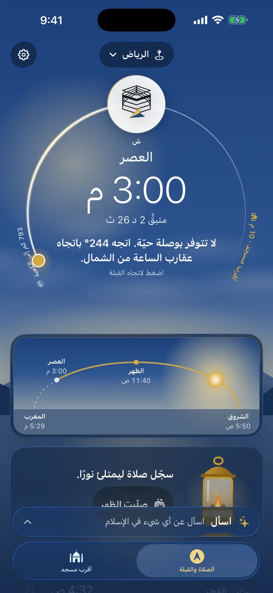

صلاتك القادمة
في مكانٍ ما على الأرض يُرفع الأذان الآن. مواقيت الصلاة والقبلة وأقرب مسجد أينما كنت، في تطبيقٍ واحدٍ هادئ.
حمّل التطبيقالقبلة
أدِر هاتفك يُرشدك السهم إلى الكعبة، فإذا استقبلتها أضاءت القبلة وشعرت باهتزازةٍ خفيفة.
- الاتجاه والمسافة إلى الكعبة
- وفي الأجهزة التي لا بوصلة فيها تُحدَّد القبلة انطلاقًا من الشمال، مع التنبيه إلى ذلك
مواقيت الصلاة
يعرض لك أعلى الشاشة الصلاة القادمة والوقت المتبقي لها، تحت سماءٍ يتبدّل لونها مع يومك: وردية عند الفجر، وذهبية عند العصر، وبنفسجية عند المغرب، وتُظهر طقس مدينتك إن شئت.
- 13,090 مدينة مدمجة في التطبيق، و11 طريقة حساب يُقترح منها ما يناسب بلدك
- مواقيت اليوم الستة، لكلٍّ منها تنبيه، مع التاريخ الهجري
- سماء حسب الطقس: لا تعمل حتى تفعّلها، وعندها يُرسل موقع المدينة مقرّبًا إلى نحو كيلومتر إلى MET Norway


أقرب مسجد
تعرض البوصلة كل مسجدٍ في اتجاهه الحقيقي، وتعرض الخريطة وقت المشي إليه وطريق الوصول.
- الاتجاهات في خرائط Apple أو Google Maps
- بيانات مساجد مدمجة، ومعها خرائط Apple عند تفعيل البحث على الإنترنت


اسأل والمكتبة
تُستمدّ الإجابات من الكتب المحفوظة في هاتفك، مع ذكر مصدر كل نص، وتتقدّمها فتوى أهل العلم إن وُجدت فتوى مطابقة. ووراءها 99 كتابًا من أمهات الكتب تقرؤها دون إنترنت.
- تُكتب على هاتفك بنموذج Apple المدمج في الجهاز، ولا تُرسل أسئلتك إلى ذكاءٍ اصطناعي سحابي
- 25 سؤالًا شائعًا بـ22 لغة، عليها علامة «بانتظار مراجعة العلماء»
- العقيدة والحديث والفقه والتفسير والسيرة، ويُتحقق من كل مجلد قبل فتحه
الإجابات تقتبس من الكتب، وليست فتوى.


الأذان والتذكير والأدوات
اختر أذان المسجد الحرام أو المسجد النبوي لكل صلاة، مع تذكيرٍ قبلها بعشر دقائق أو خمس. والعدّ التنازلي ينتظرك على شاشة القفل وفي الجزيرة الديناميكية.
- منبّه للفجر، وتذكير يوم الجمعة بسورة الكهف وصلاة الجمعة
- «الصمت أثناء الصلاة»: «عدم الإزعاج» في أندرويد، وفي آيفون اختصارٌ تشغّله بلمسة من تنبيه الأذان
- عشرة أنواع من الأدوات، وSiri يخبرك بالصلاة القادمة


على كل شاشة
تطبيقٌ واحد لآيفون وآيباد وماك وآبل تي في وفيجن برو وApple Watch، والمواقيت والقبلة نفسها على أندرويد وويندوز ولينكس.
- Apple Watch: الصلاة القادمة، والقبلة بنقرةٍ على معصمك، والتسبيح بالتاج الرقمي
- 36 لغة للواجهة، منها 6 من اليمين إلى اليسار
- أندرويد من Google Play، وويندوز ولينكس بالتنزيل من هذه الصفحة





الخصوصية
تُحسب المواقيت والقبلة وإجاباتك على جهازك. لا حساب تنشئه، ولا يُرسل إلينا شيءٌ عنك.
- المواقيت والقبلة تعمل دون إنترنت
- الاتصال فقط للبحث عن المساجد (مع تقريب موقعك إلى نحو كيلومتر) والخرائط وما تختار تنزيله، ولسماء الطقس إن فعّلتها
أقرب مسجد
لا حساب تنشئه، ولا إعلانات تنتظرها.